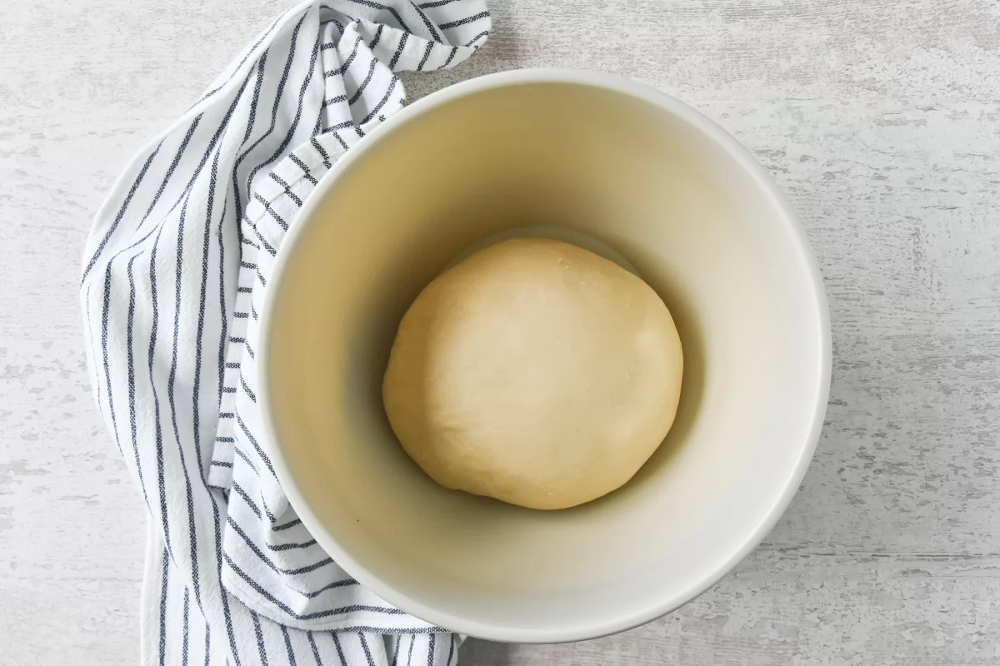

El brioche es un pan dulce elaborado con leche y mantequilla que ofrece un resultado espectacular, tanto en su sabor sabor como en su miga. En esta receta, os damos todas las claves para que os quede perfecto.
En esta ocasión, vamos a preparar un pan de brioche casero en molde alargado, aunque con los mismos ingredientes, podemos preparar piezas individuales, trenzas o mini bollitos.
Recetas de brioche hay multitud; unas utilizan más mantequilla, otras menos leche, más huevos... La que compartimos hoy aquí es la que más nos gusta a nosotros y además, es una receta muy sencilla de seguir y el resultado es espectacular. Para darle un toque diferente, a veces aromatizamos la masa con cardamomo, canela o nuez moscada.
Para preparar este pan dulce fácilmente en casa recomendamos utilizar la amasadora. Se puede preparar también amasando a mano, aunque lógicamente resulta más entretenido. Aunque el brioche es dulce, también podemos servirlo con relleno salado, como si fuera un sándwich, ¡la combinación de sabores es muy rica!
Podemos congelar el brioche una vez esté totalmente frío. En este caso, os aconsejamos rebanarlo para poder degustarlo en el desayuno. Para descongelarlo, lo dejaremos un rato a temperatura ambiente o lo podemos tostar si así lo queremos.
En esta ocasión, hemos utilizado levadura de panadería instantánea. Si no tenéis o preferís utilizar levadura fresca, para esta receta necesitaríais unos 12 g y además, tendréis que mezclarla antes de empezar el proceso con un poco de leche templada.
Tiempo de preparación: 10 minutos Tiempo de cocinado: 20 minutos Tiempo total: 30 minutos (más tiempo de levado) Raciones: 20 rebanadas, 750 g Categoría: panes Tipo de cocina: francesa Calorías por ración (kcal): 140
500 g de harina de trigo 4 g de levadura seca de panadería (o 12 g de levadura fresca) 60 g de azúcar ¼ de cucharadita de sal (0,5 g) 2 huevos M a temperatura ambiente 100 ml de leche templada 50 ml de agua templada 50 g de mantequilla a temperatura ambiente
Mezclamos un bol, el de la amasadora o en uno para amasar a mano, 500 g de harina de trigo, 4 g de levadura seca instantánea de panadería, 60 g de azúcar y un cuarto de cucharadita de sal.

En caso de usar levadura fresca, habría que mezclarla previamente con la leche templada. Añadimos 2 huevos M ligeramente batidos (guardamos un poco de huevo batido para el acabado), 100 ml de leche templada y 50 ml de agua templada. Amasamos a velocidad media durante 5 minutos. Agregamos 50 g de mantequilla a temperatura ambiente y amasamos 3 minutos más hasta que la masa esté lisa y elástica. Formamos una bola, tapamos con un trapo y dejamos levar 2 horas en un lugar sin corrientes de aire. Pasadas las 2 horas, la masa habrá duplicado su tamaño. Hundimos la masa con la mano para sacar el aire y la dividimos en 3 porciones iguales. Boleamos cada porción, dejando los cierres por debajo. Disponemos las 3 bolas de masa en un molde alargado forrado con papel de horno, tapamos de nuevo con el trapo y dejamos levar entre 1 hora y 1 hora y media, hasta que la masa doble su volumen. Antes de que haya levado por completo, precalentamos el horno a 180 ºC. Pasado el tiempo indicado de levado, la masa estará a punto para hornear. Pintamos la superficie con el huevo batido reservado. Horneamos durante 20 minutos a 180 ºC hasta que esté dorado. Retiramos el pan del horno y lo dejamos enfriar encima de una rejilla. Una vez frío, ya podemos disfrutarlo.

Mezclamos los ingredientes secos Agregamos los huevos, la leche y el agua Amasamos y añadimos la mantequilla Formamos una bola y la dejamos levar La masa debe duplicar su volumen Dividimos la masa en tres porciones iguales Boleamos las tres porciones Las disponemos en un molde Las dejamos levar de nuevo Pintamos con huevo batido Horneamos 20 minutos a 180 ºC.
